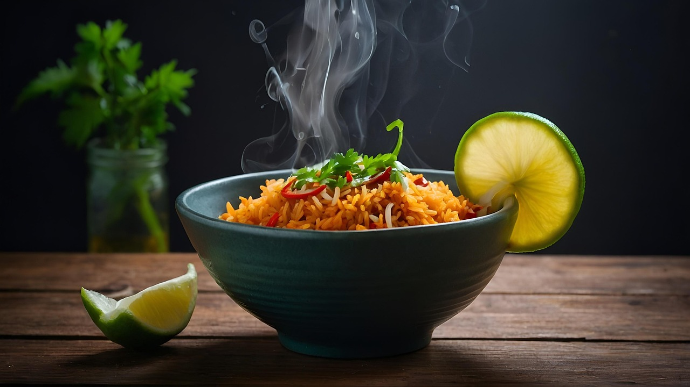

Biryani Recipe:
Click here to navigate Back to Index Page

The above is a image of the dish Biryani.
The main ingredient here is steamed rice, taken of 2-3 varieties
for making it more attractive.
It is best served hot with gravy and riata.
Ingredients
- Steamed Rice
- Cloves, Garlic, Cardamom and black pepper
- Oil, Sesame seeds
- Vegetables (4 - 5 varieties)
- Salt, Red Chilli powder, Coriander powder, Biryani mix spice powder
- Coriander and fried onions
Steps
- Cook/Steam the rice and keep it aside
- Add oil and all the spices in a pan
- Boil all the veggies and drain
- Mix the veggies with all the powders and salt.
- Start layering thing in the pan.
- Let oil+spices stay at the bottom start adding veggies and rice alternatively in the pan
- at last top of the rice+veggie layers with coriander and fried onion
and cook for 15 mins with the lid on the pan.
- The dish is ready to eat, just garnish it with more
coriander,lemon slices and fried onion.